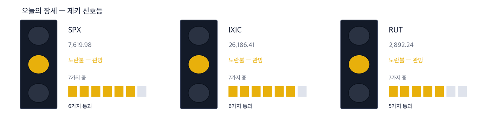
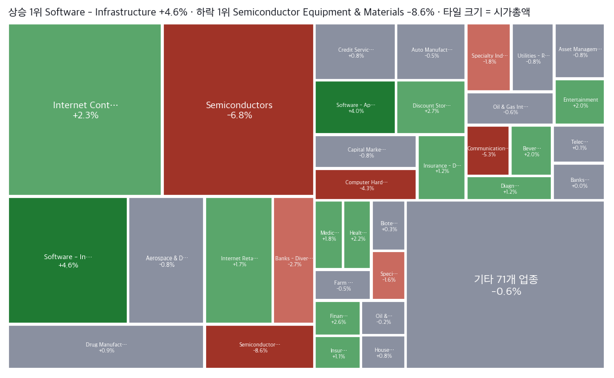
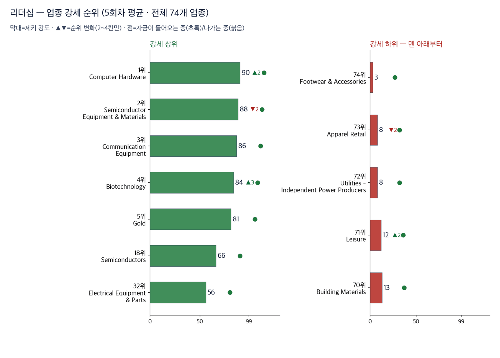
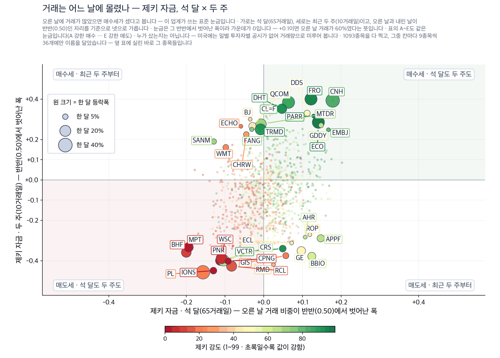
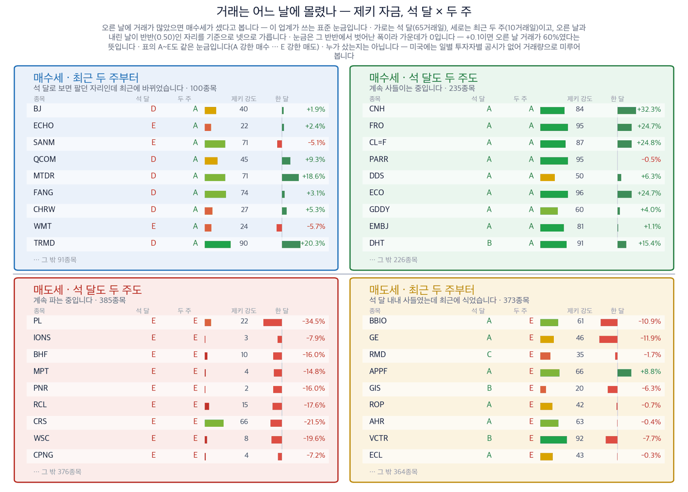
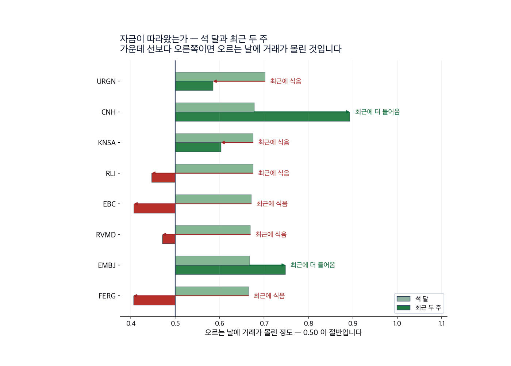
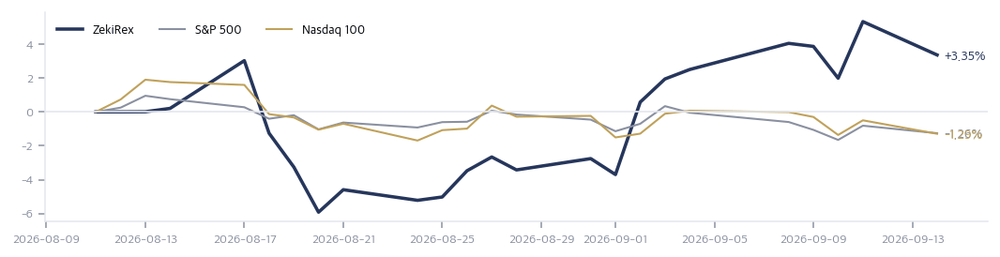

|
ZekiRex™ Apex US — 2026년 9월 15일
오늘의 판단 · 1/2
데이터 기준 9/14 (ET) 종가 · 밤사이 서울 9/15 종가(현지시간) |
ZekiRex™ |
|
|
|
THE REX CALL
9월 14일 미국 10년물 국채금리가 장중 5.011%까지 올랐다가 4.96%로 마쳤습니다. 지수는 0.5% 안팎 내렸는데 필라델피아 반도체 지수는 6% 가까이 내렸습니다. 값을 치른 곳이 따로 있었습니다.
9월 14일 종가 기준으로 새로 담거나 판 종목은 없습니다. 손절가를 밑돈 종목도 없습니다. 현금은 29.19%이고 자리 4개가 모두 차 있습니다.
오늘 반드시 알아야 할 것
1. 미국 10년물 국채금리가 9월 14일 장중 5.011%까지 올랐습니다. 2023년 10월 이후 가장 높은 수준이라고 유로뉴스가 전했습니다. 2. 모건스탠리가 골드만삭스에 이어 연준 동결 전망을 인상으로 바꿨습니다. 시장이 보는 인상 확률은 92%를 넘습니다. 3. 사우디 동서 송유관이 멈춘 채로 브렌트유는 9월 14일 105.7달러로 1.02% 올랐습니다. 뱅크오브아메리카는 핵심 시설 타격이 길어지면 150달러까지 열려 있다고 봅니다. 4. 인공지능 개발 속도를 늦추자는 경영진들의 요구가 나온 뒤 관련 주식이 내렸습니다. 엔비디아는 장 초반 3% 내렸습니다. 5. 삼성전자가 네덜란드 스타트업 유클리드의 2억3천만 달러 조달을 공동 주도했습니다. 그래픽처리장치 대안을 찾는 자금입니다.
| |
 이 그림 읽는 법 | 켜진 등 | 오늘의 국면입니다. 초록은 매수 우위, 노랑은 관망, 빨강은 매수 자제입니다. | | 채워진 칸 | 7가지 조건 중 몇 개를 통과했는지입니다. 칸이 많이 찰수록 시장 구조가 튼튼합니다. | | 칸이 다 찼는데 노랑·빨강이면 | 다른 이유로 한 단계 낮춘 것입니다. 그림 아래에 그 이유를 적었습니다. |
|
최근 10거래일 국면 추이 (왼쪽이 과거) 방향 — 어디까지 왔나. 이 신호등은 7가지 조건을 세어 정합니다. S&P 500과 나스닥 종합이 6가지, 러셀 2000이 5가지입니다. 지수 3개가 함께 못 채운 조건은 52주 저점에서 충분히 올라와 있어야 한다는 것입니다. 러셀 2000은 여기에 더해 50일 이동평균선 아래에 있습니다. 장기 구조는 3개 모두 온전해서 빨간불이 아니라 노란불입니다.
| |
| 오늘의 조치 |
| 오늘 신규 매매 없음. 규칙이 요구하지 않는 날에 거래하지 않는 것도 하나의 결정입니다. |
|
기준 2026-09-14 15:46 ET 실제 운용 계좌를 그대로 비춥니다 종목·비중·매매·손절가는 모두 실제 계좌의 것입니다. 이 지면에서 고른 것은 하나도 없습니다. 계좌 금액과 주식 수는 싣지 않습니다. 추천이 아닙니다. | 종목 | 비중 | 손익 | 현재가 | 손절가 | 여유 | 보유일 | 다음 이벤트 | | IRDM | 18.1% | −4.1% | $46.07 | $44.87 | +2.7% | 22일 | — | | MPC | 20.7% | +9.6% | $394.69 | $331.32 | +19.1% | 22일 | 실적 11-03 | | DINO | 8.7% | +11.3% | $106.54 | $88.07 | +21.0% | 27일 | 실적 10-29 | | DELL | 23.3% | +23.4% | $538.58 | $401.41 | +34.2% | 22일 | 실적 11-27 | | 현금 | 29.2% | 단기 국채 ETF(USFR)에 예치해 둡니다 |
|
체결 기록 | 09-02 | USFR | 매수 | $50.43 | | 08-24 | MPC | 매수 | $360.13 | | 08-24 | IRDM | 매수 | $48.05 | | 08-24 | DELL | 매수 | $436.32 | | 08-19 | DINO | 매수 | $95.73 |
체결가는 실제 체결된 값 그대로입니다. 주식 수와 금액은 싣지 않습니다. |
| Rex US Best — 이 뉴스레터에 실린 이름들의 성적표 |
무엇인가. 이 뉴스레터에 이름이 오른 회사들을 모아 만든 지수입니다. 관문을 통과한 종목과 포트폴리오 보유 종목을 합쳐 최대 스물아홉 곳까지, 모두 같은 비중으로 담습니다. 명단은 판이 나가는 날 그대로 얼려 두고 뒤에 고치지 않습니다 — 지나고 나서 좋았던 것만 골라 넣으면 어떤 성적표도 좋아 보이기 때문입니다. 무엇을 위한 것인가. 저희가 지면에 적은 이름이 실제로 값을 하는지 숫자로 남기기 위해서입니다. 그래서 같은 기간 S&P 500 · 나스닥 100과 나란히 놓고, 사고파는 비용을 뺀 뒤의 숫자도 함께 싣습니다. 아닌 것. 살 수 있는 상품이 아니고, 추천도 아니며, 저희 계좌의 성적도 아닙니다. |
| Rex US Best | −1.36% | 비용 전 | | 같은 것, 비용 차감 후 | −1.36% | | | S&P 500 | −0.45% | | | 나스닥 100 | −0.80% | |
1거래일치입니다. 짧은 구간은 운과 실력을 가르지 못하므로 120거래일이 쌓이기 전까지는 이 숫자로 판단하지 마십시오. 많이 오른 쪽 | Okta, Inc. | +11.98% — 거래량 50일 평균의 +104% · 52주 고점까지 0.0% · 제키 강도 95→94 | | BJ's Restaurants, Inc. | +2.24% — 거래량 50일 평균의 -24% · 52주 고점까지 16.3% | | The Chefs' Warehouse, Inc. | +2.16% — 거래량 50일 평균의 -31% · 52주 고점까지 2.3% · 제키 강도 92→91 |
많이 내린 쪽 | Oceaneering International, Inc. | −8.87% — 거래량 50일 평균의 +11% · 52주 고점까지 14.0% | | Materion Corporation | −6.71% — 거래량 50일 평균의 -7% · 52주 고점까지 19.2% | | Dell Technologies Inc. | −5.82% — 거래량 50일 평균의 +23% · 52주 고점까지 5.8% |
새로 들어온 종목 | Slide Insurance Holdings, Inc. | 관문을 새로 통과했습니다 | | Allient Inc. | 관문을 새로 통과했습니다 | | Arrow Electronics, Inc. | 관문을 새로 통과했습니다 |
빠진 종목 | Seagate Technology Holdings PLC | 명단에 1회차(2026-09-11~), 그동안 +0.00%. 관문을 통과하지 못했습니다 | | Arcelor Mittal NY Registry Shar | 명단에 1회차(2026-09-11~), 그동안 +0.00%. 제키 강도 91에서 89로 내려 순위 59위로 밀려 명단 밖이 되었습니다 | | Dave Inc. | 명단에 1회차(2026-09-11~), 그동안 +0.00%. 제키 강도 91에서 90로 내려 순위 56위로 밀려 명단 밖이 되었습니다 |
|
| 보유 종목 소식 — 오늘 |
| IRDM | 이번 수집분에 개별 기사가 없습니다 | | MPC | 이번 수집분에 개별 기사가 없습니다 | | DINO | 이번 수집분에 개별 기사가 없습니다 | | DELL | 야후파이낸스는 엔스케일의 자금 조달 협상이 델과 노키아의 인공지능 공급 관계를 시험대에 올린다고 짚었습니다. — Yahoo Finance 2026-09-13 07:40 ET |
|
| 관문을 통과한 종목 — 자리가 없어 담지 못한 이름들 |
| 반도체·하드웨어 4 | | MU Micron Technology, I | RS 98 | $924.03 | | AMD Advanced Micro Devic | RS 97 | $493.41 | | P Everpure, Inc. | RS 87 | $93.78 | | QRVO Qorvo, Inc. | RS 81 | $107.98 | | 에너지·정유 4 | | LPG Dorian LPG Ltd. | RS 94 | $55.38 | | PSX Phillips 66 | RS 93 | $257.06 | | CVE Cenovus Energy Inc | RS 90 | $33.27 | | CVI CVR Energy Inc. | RS 93 | $48.63 | | 금융 3 | | SLDE Slide Insurance Hold | RS 90 | $26.23 | | BFH Bread Financial Hold | RS 84 | $109.23 | | MRX Marex Group Limited | RS 94 | $70.82 | | 소재·광물 2 | | CGAU Centerra Gold Inc. | RS 93 | $21.78 | | TECK Teck Resources Ltd | RS 81 | $66.25 | | 헬스케어 1 | | PACS PACS Group, Inc. | RS 97 | $44.55 | | 기타 1 | | GEO Geo Group Inc (The) | RS 91 | $30.85 |
|
왜 못 담았나. 규칙상 자리는 넷뿐이고 각 자리에 총자산 25%가 들어갑니다 — 한 종목이 −8%에 걸려도 계좌 전체로는 2% 손실이 되도록 맞춘 구조입니다. 자리를 비우는 길은 손절과 오실레이터 이탈 둘뿐이라, 더 좋은 후보가 나와도 갈아타지 않습니다.
통과 목록이 말하는 것. 61개가 35개 업종에 흩어져 있고 상위 3개 업종을 합쳐도 12종목(20%)뿐입니다. 시장의 강세는 넓습니다. 우리 4자리는 에너지·정유 2, 반도체·하드웨어 1로 나뉘어 있고 가장 큰 쪽이 에너지·정유입니다 — 그래서 하루 등락이 지수와 평균 1.3%p 벌어졌고, 가장 크게 갈린 8/18 세션에는 S&P 500 보다 3.6%p 더 내렸습니다. (업종 미확인 1종목 제외) 아래는 그중 종합점수 상위 15개이며, 매수 추천이 아니라 자리가 열리면 작업을 시작할 순서입니다. |
| 핵심 지표 |
S&P 500 7,620 -0.48% · 고점 −2.3% 7,620으로 0.48% 내렸습니다. 7가지 조건 가운데 6가지를 통과했습니다. 못 채운 하나는 52주 저점에서 충분히 올라와 있어야 한다는 조건입니다. 상단권 | 나스닥 종합 26,186 -0.56% · 고점 −3.3% 26,186으로 0.56% 내렸습니다. 지수 4개 가운데 낙폭이 가장 컸고, 그 손실은 반도체에 몰려 있었습니다. 상단권 | 러셀 2000 2,892 -0.40% · 고점 −5.7% 2,892로 0.4% 내렸습니다. 7가지 조건 가운데 5가지만 통과했고 50일 이동평균선 아래에 있는 지수도 이것뿐입니다. 금리 부담은 작은 회사에서 먼저 보입니다. 상단권 | 미 국채 10년 4.96% 4.96%로 마쳤고 장중에는 5.011%까지 올랐습니다. 2년물은 4.38%, 30년물은 5.33%입니다. 먼 미래의 이익을 지금 값으로 바꾸는 할인율이 여기서 정해집니다. 과열 | 달러인덱스 99.5 적정 | 포트폴리오 +3.35% 현금 29% · 보유 4종목 9월 14일 하루에 1.86% 내렸습니다. 같은 날 S&P 500은 0.45%, 나스닥100은 0.8% 내렸습니다. 지수의 4배입니다. 원인은 분산이 아니라 집중입니다. 설정 이후 |
|
| 한 줄 정리: 9월 14일 뉴욕 종가는 S&P 500이 7,620, 나스닥 종합이 26,186입니다. 다우는 52,421이고 러셀 2000은 2,892입니다. 지수 4개가 모두 0.5% 안팎 내렸습니다. 지수 옆의 상단권 딱지와 저희 신호등의 노란불이 반대로 보일 수 있습니다. 값은 52주 고점 바로 아래에 있습니다. 그런데 7가지 조건 가운데 S&P 500과 나스닥이 6가지, 러셀 2000이 5가지만 통과했습니다. 값은 높은 자리에 있고 근거는 하나씩 빠지는 중입니다. 이 둘은 모순이 아니라 같은 국면의 두 얼굴입니다. |
|
|
|
판단의 근거 · 2/2
데이터 기준 9/14 (ET) 종가 · 밤사이 서울 9/15 종가(현지시간) |
ZekiRex™ |
|
|
| 오늘 반드시 알아야 할 것 |
|
지수 0.5% 뒤에서 주도주가 6% 깎였습니다
9월 14일 뉴욕에서 S&P 500은 0.48%, 나스닥 종합은 0.56% 내렸습니다. 조용한 하루처럼 보입니다. 같은 시간 10년물 국채금리는 장중 5.011%까지 올랐습니다. 2023년 10월 이후 가장 높은 자리입니다. 종가는 다시 5% 아래로 되돌아왔습니다. 그 선을 하루 안에 찍고 물러난 것입니다. 손실은 지수에 고르게 퍼지지 않았습니다. 필라델피아 반도체 지수가 6% 가까이 내렸고 마이크론은 5.25%, AMD는 4.4% 내렸습니다. 정유는 거의 그대로였습니다. 마라톤페트롤리엄은 0.13% 올랐고 HF싱클레어는 0.86% 내렸습니다. 왜 그런가. 두 지면이 같은 하루를 다르게 셉니다. 한국 매체는 미국발 긴축 공포를 앞세워 조선·전력기기주 급락을 제목에 올렸습니다. 미국 매체는 사우디 송유관 폐쇄와 유가를 금리 상승의 원인으로 먼저 지목했습니다. 결과를 앞에 둘지 원인을 앞에 둘지가 갈린 것입니다. 저희 숫자는 세 번째 자리를 가리킵니다. 금리가 5%에 닿으면 먼 미래의 이익을 지금 값으로 바꾸는 할인율이 함께 올라갑니다. 그래서 오늘 현금 마진을 버는 사업은 그대로 있고, 이익이 몇 해 뒤에 있는 사업은 회사 소식이 없어도 값이 깎입니다. 업종 순위가 그 모양대로 움직였습니다. 전력기기와 엔지니어링·건설이 가장 크게 밀려났고 반도체와 전자부품도 순위를 잃었습니다. 다음에 무엇이. 답이 나오는 자리는 이번 주 연준 회의입니다. 공급에서 시작된 물가를 정책 금리로 다룰 수 있느냐가 쟁점입니다. 모건스탠리가 골드만삭스에 이어 인상 전망으로 옮겼고 시장이 보는 확률은 92%를 넘습니다. 그래서 볼 것은 결정 자체가 아니라 10년물이 5% 위에 자리를 잡는가입니다. 결정 뒤에도 4.9%대에 머무르면 어제의 되돌림이 이어지는 것이고, 5% 위에서 굳으면 주도주가 다시 깎입니다.
그래서 우리는: 반도체나 인공지능 설비를 들고 계신 독자라면 이번 주에 다시 볼 것은 매출 전망이 아니라 할인율입니다. 10년물이 5% 위에 자리를 잡으면 똑같은 전망이 더 낮은 값으로 계산됩니다. 회사가 아무 발표를 하지 않아도 그렇습니다. 반대쪽도 적습니다. 정유를 들고 계시다면 오늘의 정제 마진이 값을 받치고 있는 것이고, 그래서 어제 움직이지 않았습니다. 다만 같은 금리 수준이 결국 그 제품을 사는 수요에도 닿습니다. 공급 충격 위로 금리 인상이 겹치면 그 길이 짧아집니다. 한 가지 사건이 이 질문을 정리합니다. 이번 주 연준 결정입니다. 금리를 올리면 수요는 줄지만 막힌 송유관이 열리지는 않습니다.
Rex Lens™
| |
| 그 밖에 알아야 할 것 |
| 아프리카 최대 규모 공모 청약 시작 · 프랑스24는 알리코 당고테가 나이지리아 정유공장의 공모를 시작해 대륙 전역의 개인 투자자에게서 16억 달러를 모으려 한다고 전했습니다. 공장 가치는 490억 달러로 매겨졌습니다. (France 24 · The Guardian · Deutsche Welle) → 상장 뒤에는 정제 마진이 나이지리아 국내 정책과 직접 묶이므로, 미국 정제 업종과 같은 흐름으로 움직인다고 보기 어렵습니다. | | 베트남, 2014년 이후 첫 달러 국채 발행 검토 · 로이터는 베트남 정부가 2014년 이후 처음으로 달러 표시 국채를 파는 방안을 살피고 있다고 복수의 소식통을 들어 단독으로 전했습니다. 발행 시기는 아직 정해지지 않았습니다. (Reuters · Channel NewsAsia) → 미국 10년물이 5% 부근일 때 신흥국이 달러를 빌리면 표면금리가 그만큼 올라가므로, 이 발행 조건은 미국 금리의 온도계 노릇을 합니다. | | 미 의회, 인공지능 위험 입법 논의 본격화 · 월스트리트저널은 의회가 인공지능의 파국 위험을 다루는 입법에 뒤늦게 눈을 뜨고 있다고 전했습니다. 법안 심사는 앞으로 남은 일정이며 통과 여부는 정해지지 않았습니다. (WSJ World) → 규제가 실제로 만들어지면 비용은 모형을 만드는 쪽이 먼저 집니다. 부품과 전력을 파는 쪽의 수요가 언제 줄어드는지는 그다음 문제입니다. | | 넥스트에라, 도미니언 합병 절차 속 2026년 전망 상단 재확인 · 월스트리트저널은 넥스트에라에너지가 2026년 조정 주당순이익 전망을 3.92~4.02달러 범위의 상단으로 재확인했고, 670억 달러 규모 도미니언 합병의 주 규제 절차를 밟고 있다고 전했습니다. (WSJ US Business) → 합병이 끝나면 전력 공급 계약의 상대가 바뀌므로, 대형 전력 수요처에는 가격보다 계약 주체가 먼저 달라집니다. | | 일본 각의, 식품 소비세 2년 인하안 의결 · 재팬타임스는 일본 내각이 식품 소비세를 8%에서 1%로 2년간 낮추는 방안의 골자를 승인했다고 전했습니다. 관련 법안은 가을 국회에 제출될 예정입니다. (Japan Times) → 식품 물가를 낮추면 일본은행이 물가 지표를 읽는 방식이 흔들리므로, 엔화와 일본 장기물에 먼저 반영될 수 있습니다. |
|
한국과 미국을 잇는 것: 이 충격은 뉴욕에 두 번 도착합니다. 먼저 금리와 유가로 옵니다. 다음에는 아시아 공장의 원가를 거쳐 미국이 사들이는 메모리와 부품 값으로 옵니다. 9월 15일 서울에서 코스피는 약보합으로 마쳤고 삼성전자는 0.2%, SK하이닉스는 0.41% 내렸습니다. 같은 날 원·달러 환율은 12.1원 올라 1,360원에 닿았습니다. 원화가 약해지면 한국 수출 기업의 원가 부담은 덜어지고 미국이 사들이는 부품 값도 그만큼 내려갑니다. |
 Rex Pulse™ — 지수·가상자산 / 통화 / 원자재 / 채권 16종, 1년 추이와 50일 이동평균(점선) · 기준 뉴욕 9/14 종가, 서울 9/15 종가(현지시간) |
저희 신호등은 노란불입니다. 9월 14일 기준으로 지수 3개 모두 장기 구조가 온전합니다. 다만 52주 저점에서 충분히 올라와 있어야 한다는 조건을 셋 다 못 채웁니다. 러셀 2000만 50일 이동평균선 아래에 있습니다. 채권 쪽이 이번 국면의 주어입니다. 10년물과 2년물 4.38%의 차이는 0.58%포인트입니다. 이 간격이 벌어지는 동안 값이 깎이는 것은 먼 미래의 이익입니다. 그래서 볼 것은 지수의 하루 등락이 아니라 이 간격입니다. 신호등이 매수를 막지는 않습니다. 위험 관리는 종목마다 정해 둔 손절가가 합니다. |
 색은 당일 등락(짙을수록 큼), 타일은 시가총액입니다. 상단에 당일 상승·하락 1위가 적혀 있고, 큰 칸이 움직인 날이 지수가 움직인 날이라는 뜻입니다 — 아래 리더십 순위(추세의 힘)와 함께 읽으십시오. |
| 리더십 — 업종 강세 순위 |
 이 그림 읽는 법 | 막대 | 업종 소속 종목의 제키 강도 중앙값입니다. 최근 5회차를 평균해 하루치 흔들림을 걷어냈습니다. | | ▲▼ 숫자 | 하루 전보다 순위가 몇 칸 움직였는지입니다. 1칸은 너무 작고 5칸 이상은 절반이 되돌아와서(실측) 2~4칸만 적습니다. | | 점 | 20거래일 자금 순위의 방향입니다. 초록이면 들어오는 중, 붉으면 나가는 중입니다. | | 공동 순위 | 값이 같으면 같은 순위입니다. 억지로 가르지 않습니다. | | 강세 상위 | 강도가 가장 높은 업종들입니다. 자리가 열리면 여기서부터 찾습니다. | | 강세 하위 | 전체 업종 가운데 맨 아래입니다. 번호는 왼쪽과 같은 잣대라, 38개 업종이면 38위가 가장 약합니다. 지금 새로 살 자리가 아니고, 들고 계신 종목이 여기 속하면 손절가부터 확인하실 자리입니다. 바닥에서 돌아서는 업종은 막대보다 점이 먼저 초록으로 바뀝니다. | | 번호가 건너뛰면 | ＋ 표시가 붙은 업종입니다. 맨 아래 다섯에 들지는 않았지만 본문이 짚었거나 저희가 들고 있어 함께 실었습니다. 자료가 빠진 것이 아닙니다. |
| 순위 | 업종 | 제키 강도 | 변화 |
|---|
| 1위 | Computer Hardware | 90 | ▲2 | | 2위 | Semiconductor Equipment & Materials | 88 | ▼2 | | 3위 | Communication Equipment | 86 | | | 74위 | Footwear & Accessories | 3 | | | 73위 | Apparel Retail | 8 | ▼2 | | 72위 | Utilities - Independent Power Producers | 8 | |
|
| 수급 — 돈이 실제로 어디로 갔나 |
 이 그림 읽는 법 | 점 하나 | 종목 하나입니다. 가로·세로 위치가 두 값을 그대로 나타내고, 가운데 가로·세로로 그어진 두 선이 기준선입니다. 네 귀퉁이의 이름표가 그 칸의 뜻입니다. | | 점 크기 | 최근 한 달 등락폭입니다. 오르든 내리든 크게 움직였으면 큰 점입니다. | | 점 색 | 제키 강도입니다. 초록일수록 주가가 시장에서 강합니다. | | 30종목만 | 이름이 겹치면 못 읽기 때문입니다. 가운데 몰린 나머지는 움직임이 거의 없는 종목들이라 뺐습니다. |
 이 그림 읽는 법 | 네 칸 | 가로와 세로 두 값이 각각 기준선을 넘었는지로 넷을 가릅니다. 오른쪽 위는 둘 다 넘은 곳, 왼쪽 아래는 둘 다 못 넘은 곳, 나머지 두 칸은 한쪽만 넘은 곳입니다. 칸 이름이 그 칸에 든 종목의 상태를 한 문장으로 적어 둔 것입니다. | | 가운데 두 칸 | 두 기간을 견주는 자리입니다. 글자 A~E가 있으면 이 업계가 쓰는 표준 등급으로, A는 강한 매수, B는 매수 우세, C는 매수와 매도가 반반, D는 매도 우세, E는 강한 매도를 뜻합니다(전체를 다섯으로 나눈 순위라 A가 상위 20%입니다). 숫자가 있으면 그 기간의 순매수 규모입니다. | | 칸마다 9종목 | 그 칸에서 움직임이 가장 큰 순서입니다. 나머지는 칸 아래에 몇 종목인지만 적었습니다. 옆 산점도가 이름을 다는 종목이 바로 이 9종목씩입니다. | | 한 달 막대 | 0을 가운데 두고 오른쪽이 상승, 왼쪽이 하락입니다. 길이는 같은 칸 안에서만 서로 견주십시오 — 칸마다 기준이 다릅니다. | | 제키 강도 | 1~99 순위입니다. 막대가 길수록, 초록에 가까울수록 그 종목의 주가가 시장에서 강합니다. |
 이 그림 읽는 법 | 막대 둘 | 위가 석 달, 아래가 최근 두 주입니다. 같은 종목의 두 기간을 나란히 놓았습니다. | | 가운데 선 | 0.50 입니다. 오른쪽이면 오르는 날에 거래가 더 몰렸고, 왼쪽이면 내리는 날에 몰렸습니다. | | 화살표 | 석 달에서 두 주로 가는 방향입니다. 오른쪽으로 가면 최근에 더 들어온 것이고, 왼쪽이면 식은 것입니다. | | 맨 오른쪽 글씨 | 그 방향을 말로 적은 것입니다 — 「최근에 더 들어옴」이면 자금이 이어지는 중입니다. |
미국에는 일별로 누가 샀는지 공시가 없습니다. 기관 보유는 분기에 한 번 그것도 45일 늦게 나옵니다. 그래서 이 그림은 사람이 아니라 거래를 봅니다 — 0.50 이 기준이고, 오른쪽으로 갈수록 석 달 동안, 위로 갈수록 최근 두 주 동안 오르는 날에 거래가 몰렸다는 뜻입니다. 업종 — 값의 강세와 돈의 흐름을 나란히 돈이 먼저 온 곳 — 값은 아직입니다 | 업종 | 강세 | 자금 | 20거래일 |
|---|
| Information Technology Services | 95 | 17 | +0.032 | | Specialty Business Services | 94 | 26 | +0.020 | | Packaged Foods | 102 | 38 | +0.007 |
값만 센 곳 — 돈은 빠지고 있습니다 | 업종 | 강세 | 자금 | 20거래일 |
|---|
| Communication Equipment | 5 | 81 | -0.029 | | Electronic Components | 9 | 83 | -0.031 | | Semiconductor Equipment & Materials | 2 | 75 | -0.023 |
강세 순위 — 제키 강도(12개월 가중)로 세운 순위입니다. 최근 5회차를 평균해 하루치 흔들림을 걷어냈습니다. 자금 순위 — 20거래일 순매수로 세운 순위입니다. 값이 아니라 **돈이 들어온 양**을 봅니다. 공동 순위 — 값이 같으면 같은 순위를 줍니다. 억지로 가르지 않습니다. 두 순위가 어긋나면 — 그 자리가 볼 만합니다. 돈이 먼저 오면 값이 아직인 것이고, 값이 먼저 세면 돈이 빠지는 중일 수 있습니다. |
| Rex 25™ — 당일 등락률 전체 순위 |
| 01 OKTA Okta+11.98% | | 02 SLDE Slide Insurance Holdin+5.60% | | 03 BJRI BJ's Restaurants+2.24% | | 04 CHEF The Chefs' Warehouse+2.16% | | 05 ENVA Enova International+1.45% | | 06 CVE Cenovus Energy+0.48% | | 07 LPG Dorian LPG+0.36% | | 08 TGTX TG Therapeutics+0.20% | | 09 ● MPC Marathon Petroleum+0.13% | | 10 PACS PACS Group-0.47% | | 11 ● DINO HF Sinclair-0.86% | | 12 PSX Phillips 66-0.93% | | 13 CXW CoreCivic-2.00% | | 14 GEO Geo Group Inc (The) RE-2.03% | | 15 CVI CVR Energy-2.07% | | 16 MRX Marex Group-2.99% | | 17 CGAU Centerra Gold-3.76% | | 18 AMD Advanced Micro Devices-4.40% | | 19 WT WisdomTree-4.76% | | 20 MU Micron Technology-5.25% | | 21 ● DELL Dell Technologies-5.82% | | 22 ARW Arrow Electronics-6.29% | | 23 MTRN Materion-6.71% | | 24 ALNT Allient-8.22% | | 25 OII Oceaneering Internatio-8.87% |
|
8,028종목 가운데 61개가 저희 기준을 넘었고 그중 위 25개를 싣습니다. 상승 쪽 맨 위는 옥타입니다. 9월 14일 하루에 11.98% 올랐고 거래량은 50일 평균의 두 배를 넘었습니다. 값이 오른 날 거래량이 함께 늘면 판 사람보다 산 사람이 많았다는 뜻입니다. 하락 쪽은 오션니어링이 8.87% 내려 가장 컸고 얼라이언트와 머티리온이 뒤를 이었습니다. 3개 모두 설비와 부품을 파는 자리입니다. 명단에 새로 들어온 것은 얼라이언트, 애로우일렉트로닉스, 슬라이드인슈어런스이고 빠진 것은 데이브, 아르셀로미탈, 시게이트입니다. 하루 하락 상위가 설비·부품에 몰린 것과 업종 순위에서 전력기기가 가장 밀려난 것은 같은 사실의 두 얼굴입니다. |
| ● 표시가 우리 보유 종목입니다. 순서는 등락률만 따릅니다 — 하락 상위에 보유 종목이 있어도 그 자체가 매도 신호는 아닙니다. 매도는 −8% 손절과 오실레이터 이탈, 둘뿐입니다. |
| 보유 비중 — 하한 8% / 진입 25% |
| Dell Technologies DELL23.3% | | Marathon Petroleum MPC20.7% | | Iridium Communications IRDM18.1% | | HF Sinclair DINO8.7% |
25%는 진입 시점의 크기이지 보유 한도가 아닙니다. 오른 종목을 크다는 이유로 줄이지 않습니다. |
 성과 기준일은 9월 11일입니다. 그날 종가로 보유 4종목이 새로 정해졌고, 그 이후로 지금까지 판정할 수 있는 것은 9월 14일 한 세션뿐입니다. 한 세션으로는 성적을 말할 수 없으므로 구조만 적습니다. 그 하루에 계좌는 1.86% 내렸고 S&P 500은 0.45% 내렸습니다. 지수의 4배입니다. 원인은 델 한 종목입니다. 비중 23.32%인 델이 5.82% 내려 계좌 전체에서 1.36%포인트를 가져갔습니다. 현금 29.19%는 아무것도 잃지 않았습니다. 같은 구조는 반대로도 움직입니다. 그래서 이 그림은 성적표가 아니라 모양을 보여 줍니다. 봐야 할 것은 간격의 크기가 아니라 손익이 한 종목 밖에서도 나오기 시작하는가입니다. |
| 2026-09-14 종가 기준 심사 8,028종목 중 등급 산출 4,004종목 가운데 61종목이 조건을 통과했습니다. 조건 통과는 매수 추천이 아닙니다. |
| 출처: 야후 파이낸스, 16:00 ET 종가 · 서울외국환중개 고시환율(네이버 금융) · 네이버 금융 · 야후 파이낸스 |
|
본 리포트는 정보 제공 목적이며 개별 투자 자문이 아닙니다. ZekiRex™ Apex US는 1,000만 달러 규모의 모의 포트폴리오를 규칙 기반으로 운용합니다 — 실제 계좌도, 주문도, 체결도 없습니다. 표시된 성과에는 수수료와 세금, 매매 시 가격 미끄러짐이 반영되지 않았습니다. 종목 자료에는 상장폐지된 회사가 빠져 있습니다. 그래서 성과가 실제보다 높게 나오는 치우침(생존편향)이 있습니다. 과거의 성과는 미래를 보장하지 않으며, 투자에는 원금 손실 위험이 따릅니다. |
| This is the Rex Way, ZekiRex™ |